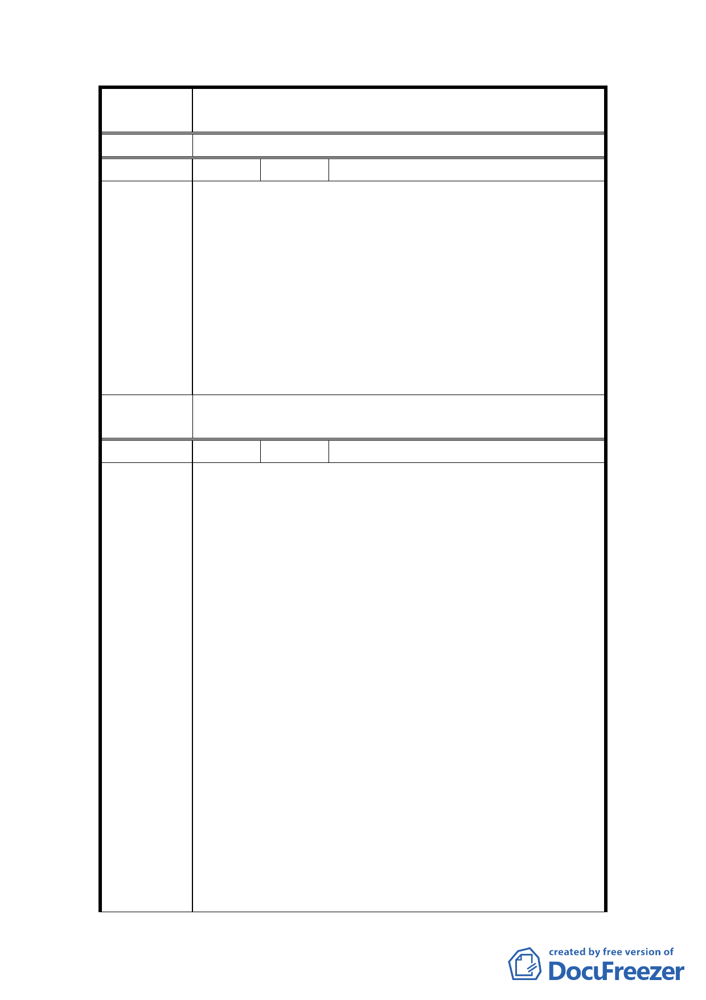

案
名
變更臺北市士林區三玉段一小段 22-3 地號等體育場用
地（天母運動公園）為臺北市立體育學用地主要計畫案
議
編 號 21 陳情人 張培源
臺北市都市計畫委員會 1 月 23 日就要審天母運動公園變
更案，審案之前，請問有沒有詳查這個案子的合法性呢，
變更尚未完成就任體院偷蓋教學大樓，政府怎麼可以狼
狽為奸知法犯法。
陳情理由
天母運動公園造福市民，已是市民生活的一部分，雖然
市府和體院目前在運動公園內豎告示牌安撫市民，聲稱
以後開放給大眾使用校地，但是市民需要的是主權在民
的運動公園，而不是由體院借給市民用的地方，況且若
干年後倘若體院蠶食鯨吞校地，市民運動有障礙、不方
便、不自由，到時候誰可以負責？
委員會決
議
同編號 1。
編 號 22 陳情人 天母台北市民權益促進會
1.95 年 10 月 25 日（06）天權字第 1025-1 號函（中華
郵政郵寄郵戳日期為 95 年 12 月 26 日）：
（1）本案臺北市政府承辦人員與台北體育學院負責人間
疑涉有貪瀆及偽造文書之罪嫌，目前由調查局及士
林地檢署偵辦中；另就該案變更程序中多有行政違
法、不當之處，本會正循行政爭訟程序尋求救濟中。
（2）系爭土地欲變更地目移轉所有權給台北體育學院之
處分，涉及土地法第 25 條應經由臺北市議會決議通
過並呈請行政院核准方得為之，目前該兩機關皆尚
未同意。
陳 情 理 由 （3）本案變更計畫，依都市計畫法第 27 條之 2 及環境
影響評估法第 5 條、第 16 條等規定，應辦理環境影
響評估，之前僅評估 5.8 公頃部分，目前擴充到 16.8
公頃，尚未重辦環境影響評估。
（4）前揭 5.8 公頃先前通過環評部分，開發單位亦未依
原計畫說明書興建體育學校校舍，致發生偽造文書
之刑事告訴，並由權責單位予以裁罰尚未補正。
（5）依臺北市政府之計畫，台北體育學院將於不久後升
格為（或併入）為國立體育大學，屆時原校地（即
系爭天母運動公園）必須廢校重找校地，國家土地
資源之浪費莫此為甚；應遵從大多數市民之意見，
19